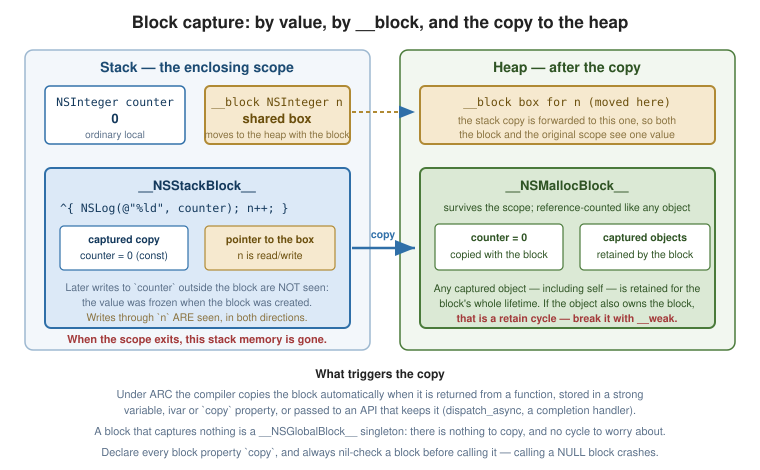

Blocks
|
This content was generated with the assistance of AI and should be verified against the official documentation before being relied on in production. |
A block is a closure: a chunk of code plus the variables it captured from its enclosing scope, packaged as an object you can store, pass and call later. Blocks are a Clang extension to C (also available in plain C and C++ on Apple platforms) and are the backbone of modern Cocoa APIs — completion handlers, enumeration, sorting, animation and Grand Central Dispatch are all block-based.
Block Syntax
The declaration syntax is notoriously hard to read. The key is that ^ occupies the position a * would in a
function-pointer declaration:
// A block variable: returns void, takes an NSString *.
void (^logger)(NSString *) = ^(NSString *message) {
NSLog(@"[LOG] %@", message);
};
logger(@"started"); // called like a function
// Returns a value; the return type is inferred from the body when omitted.
int (^square)(int) = ^(int x) {
return x * x;
};
NSLog(@"%d", square(5)); // 25
// No arguments: the parameter list may be omitted in the literal.
void (^ping)(void) = ^{
NSLog(@"ping");
};Reading a block type: returnType (^name)(parameterTypes). A block literal is
^returnType(parameters) { body }, with the return type usually left to inference.
typedef for Readability
Any block used more than once should get a typedef. This is not a style preference — an un-typedef’d block
as a return type or as a parameter of another block quickly becomes unreadable:
typedef void (^MyCompletionHandler)(NSData * _Nullable data, NSError * _Nullable error);
typedef BOOL (^MyFilterBlock)(id item);
typedef NSComparisonResult (^MyComparator)(id a, id b);
// Now signatures stay legible:
- (void)fetchURL:(NSURL *)url completion:(MyCompletionHandler)completion;
- (NSArray *)itemsPassingTest:(MyFilterBlock)test;Blocks as Method Arguments
The Cocoa convention is that a block parameter comes last, so the literal reads as a trailing body at the call site:
// Declaration
- (void)fetchURL:(NSURL *)url
completion:(void (^)(NSData * _Nullable, NSError * _Nullable))completion;
// Implementation
- (void)fetchURL:(NSURL *)url completion:(MyCompletionHandler)completion {
NSURLSessionDataTask *task =
[self.session dataTaskWithURL:url
completionHandler:^(NSData *data, NSURLResponse *response, NSError *error) {
if (completion) { // always nil-check before calling a block!
completion(data, error);
}
}];
[task resume];
}
// Call site
[self fetchURL:url completion:^(NSData *data, NSError *error) {
if (error) {
NSLog(@"failed: %@", error.localizedDescription);
return;
}
[self renderData:data];
}];Calling a nil block crashes. Unlike a message to nil, an unset block variable is a null function
pointer — always guard with if (block) { block(…); }, or declare the parameter nonnull and trust callers.
A block property must be declared copy, for reasons the next section explains:
@property (nonatomic, copy) MyCompletionHandler completionHandler;Capturing Variables
A block captures the variables it refers to. By default the capture is by value, and const:
NSInteger counter = 0;
void (^increment)(void) = ^{
// counter++; // compile error: variable is not assignable
NSLog(@"%ld", (long)counter); // reads the value captured at creation time: 0
};
counter = 42;
increment(); // prints 0, not 42 -- the value was copied when the block was madeObject pointers are captured the same way — by value — but the object is retained (under ARC) for as long as the block lives, which is what keeps a completion handler’s captured objects alive until it runs.
__block
__block changes the storage of a variable so the block can both see updates and write to it. The
variable is shared between the enclosing scope and every block that captures it:
__block NSInteger counter = 0;
void (^increment)(void) = ^{
counter++; // now legal, and writes through to the original variable
};
increment();
increment();
NSLog(@"%ld", (long)counter); // 2A common use is getting a value out of a synchronous enumeration:
__block NSString *found = nil;
[names enumerateObjectsUsingBlock:^(NSString *name, NSUInteger idx, BOOL *stop) {
if ([name hasPrefix:@"A"]) {
found = name;
*stop = YES; // stop enumerating
}
}];Note that stop here is a BOOL * out-parameter, not a __block variable — Foundation’s enumeration blocks
provide it so you do not need one.
Under ARC, a block object variable is retained by default (under MRR it was not — which is why old code
uses block as a cycle-breaking trick that no longer works that way).

Stack Blocks, Heap Blocks and copy
A block literal is created on the stack. When the enclosing scope exits, that memory is gone. A block that must outlive its scope has to be copied to the heap:
- (void (^)(void))makeBlockBadly {
NSInteger x = 42;
return ^{ NSLog(@"%ld", (long)x); }; // under ARC, the compiler copies this for you
}Under ARC this is handled automatically in almost every case: returning a block, storing it in a strong
variable or an instance variable, or passing it into a method that declares a copy property all trigger the
copy. Two situations still need care:
-
Storing a block in a C structure or a collection may not trigger the copy — send
copyexplicitly, or let the collection retain it (NSArrayretains, which under ARC is enough for a block already copied). -
Block properties must be
copy. Astrongblock property compiles and usually works under ARC, butcopydocuments the requirement and is the universal convention.
There are three block "classes" you may see in the debugger: NSGlobalBlock (captures nothing — a
singleton, copying is a no-op), NSStackBlock (captures variables, lives on the stack), and
NSMallocBlock (a stack block that was copied to the heap).
Retain Cycles and the weak/strong Dance
A block retains everything it captures, including self. If an object also holds the block — in a
property, or indirectly through an operation it owns — the two keep each other alive forever:
// LEAK: self retains the block (copy property), the block retains self.
self.completionHandler = ^{
[self refreshDisplay]; // captures self strongly
};The compiler will usually warn (capturing 'self' strongly in this block is likely to lead to a retain
cycle). The standard fix is a weak reference:
__weak typeof(self) weakSelf = self;
self.completionHandler = ^{
[weakSelf refreshDisplay]; // no retain; nil if self has been deallocated
};When the block does more than one thing with self, take a strong reference inside the block first — the
"weak/strong dance". Without it, weakSelf could become nil between two statements and the second would
silently do nothing:
__weak typeof(self) weakSelf = self;
self.completionHandler = ^{
__strong typeof(weakSelf) strongSelf = weakSelf; // one atomic load
if (!strongSelf) {
return; // the object is gone; nothing to do
}
[strongSelf refreshDisplay];
[strongSelf.delegate didRefresh:strongSelf]; // consistent for the whole block
strongSelf.isRefreshing = NO;
};strongSelf keeps the object alive only for the duration of the block, which is exactly the desired scope.
When You Do Not Need This
Capturing self strongly is correct whenever the cycle cannot close — when the block is not owned by self,
directly or transitively:
// Fine: dispatch_async owns the block, and releases it once it has run.
dispatch_async(dispatch_get_main_queue(), ^{
[self updateUI];
});
// Fine: the enumeration block does not outlive this statement.
[array enumerateObjectsUsingBlock:^(id obj, NSUInteger idx, BOOL *stop) {
[self process:obj];
}];
// Also fine, and deliberate: keep self alive until the animation finishes.
[UIView animateWithDuration:0.3 animations:^{ … } completion:^(BOOL finished) {
[self animationDidFinish];
}];Applying weakSelf reflexively to every block is a real bug source in the other direction: an object that
should have stayed alive until its callback ran gets deallocated, and the callback silently does nothing. Ask
first whether a cycle is actually possible.
The general topic is covered in Automatic Reference Counting.
Block-Based Enumeration
Foundation collections offer block enumeration alongside for…in. It supplies the index, an early-exit flag
and — optionally — concurrent execution:
[names enumerateObjectsUsingBlock:^(NSString *name, NSUInteger idx, BOOL *stop) {
NSLog(@"%lu: %@", (unsigned long)idx, name);
if (idx >= 9) { *stop = YES; }
}];
// Options: reverse order, or concurrent execution across cores.
[names enumerateObjectsWithOptions:NSEnumerationConcurrent
usingBlock:^(NSString *name, NSUInteger idx, BOOL *stop) {
[self expensiveWorkOn:name]; // the block must be thread-safe
}];
// Dictionaries hand you key and value together.
[dict enumerateKeysAndObjectsUsingBlock:^(NSString *key, id value, BOOL *stop) {
NSLog(@"%@ = %@", key, value);
}];
// Filtering and sorting take blocks too.
NSIndexSet *matches = [names indexesOfObjectsPassingTest:^BOOL(NSString *n, NSUInteger i, BOOL *s) {
return [n hasPrefix:@"A"];
}];
NSArray *sorted = [names sortedArrayUsingComparator:^NSComparisonResult(NSString *a, NSString *b) {
return [a compare:b];
}];Use for…in for a simple walk — it is shorter and marginally faster; use block enumeration when you need the
index, early exit, reverse order, concurrency, or the dictionary’s key and value together. Either way, do not
mutate the collection while enumerating it. See
Collections and Fast
Enumeration.
Blocks versus C Function Pointers
| Block | C function pointer | |
|---|---|---|
Declaration |
|
|
Captures surrounding state |
Yes |
No — state must be passed explicitly (a |
Is an object |
Yes — retained, released, storable in collections |
No |
Defined inline at the point of use |
Yes |
No |
Callable from plain C |
Yes (on platforms with the runtime) |
Yes, universally |
Cost |
Small allocation if copied to the heap |
None |
// C style: state travels in a context pointer.
static void applyC(int *values, size_t n, void (*fn)(int, void *), void *context);
// Block style: state is captured.
static void applyBlock(int *values, size_t n, void (^fn)(int));
NSInteger total = 0;
__block NSInteger sum = 0;
applyBlock(values, n, ^(int v) { sum += v; }); // no context plumbingPrefer blocks in Objective-C. Use function pointers when interoperating with a C API that requires one, or in code that must compile without the Objective-C runtime. C11 lambdas are a third option inside `.mm` files -- see xref:programming-languages/objective-c/objective-c-plus-plus-and-c-interop.adoc[Objective-C and C Interoperability].
See Also
-
Automatic Reference Counting — retain cycles,
weakandstrongin general. -
Concurrency — GCD, which is entirely block-based.
-
Collections and Fast Enumeration — the enumeration, filtering and sorting APIs.
-
Protocols and Delegation — the delegate alternative to a completion block.